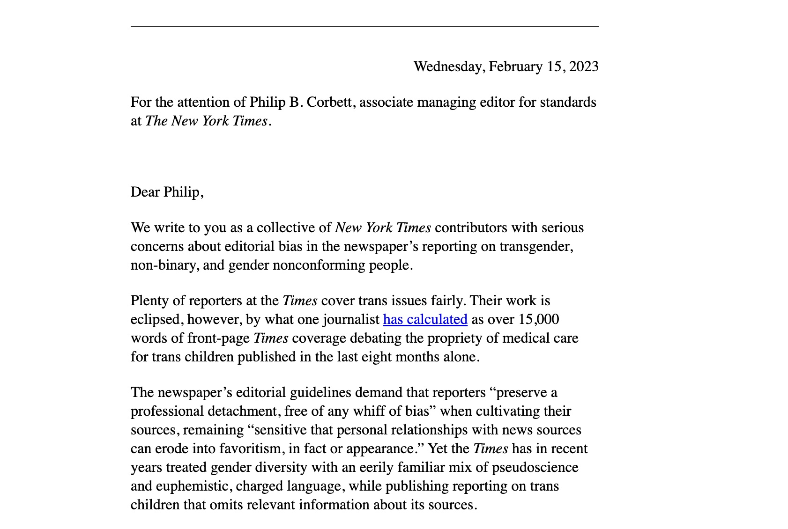
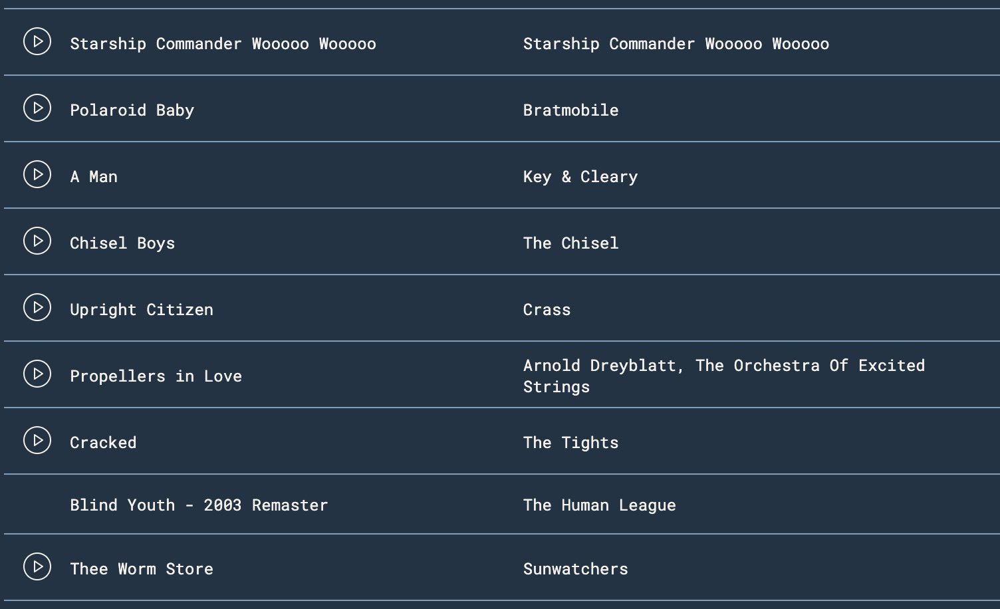
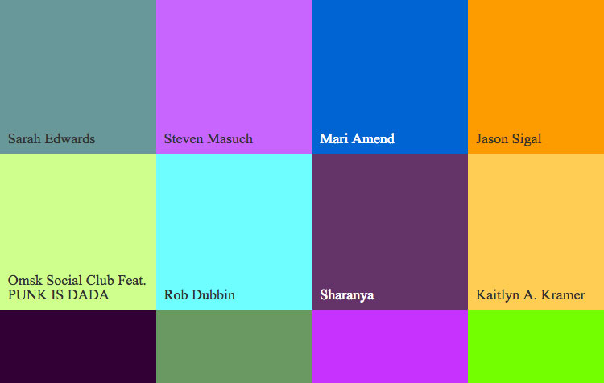
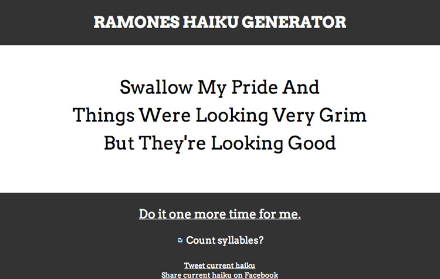

Internet
The Stopgap
A mirthful and completely unprofitable publication like the days of old. We used the Ghost CMS for this, and it gives us more problems than I would like, but the world is burning and laughs are laughs.

The New York Times Letter
A cohort of people who have written for the New York Times, and a larger cohort who have not, registered their disagreement with the paper's coverage of issues surrounding trans people and medical care. I just set up a static website and ensured a flood of traffic wouldn't make it fall over, but I was more than happy to help where I could.

Likes Song
In 2018 I started making monthly Spotify playlists in order to keep track of new (and new-to-me) songs I liked, old songs I woke up thinking about, and the weird micro-trends that arise in my own tastes. At some point it became important to me that I not repeat a song, so I made a little webapp that keeps track of everything.
DJ 3000
A Node.js-based Twitter bot based on a one-off Simpsons joke about how Congress are clowns and we're all being automated into oblivion. It polls the Guardian's news API for news regarding the United States government so it can call them clowns, plays CD's automatically via the Youtube API and a large list of "best Classic rock songs," and does weather.

WebSafe 2k16
A literary/graphic project exploring our memories of the pre-broadband Internet and related technologies. The project uses Lynda Weinman's Web Safe color palette as a field of reference constraining a large and heterogeneous archive of personal recollections: 216 authors wrote 216 words each, inspired by a specific color in the web safe range. Beginning 2/16/16, one piece was published daily.
Everything's Made To Be Broken (Take Comfort In Your Friends)
Search for a song. Watch between two and five people cover it on YouTube at the same time. I am very surprised that the YouTube API has supported this relatively seamlessly for as long as it has. This is extremely dumb and also maybe my favorite thing I have ever made.

Ramones Haiku Generator
Generate random haiku from the first three Ramones albums. It’s true that haiku don’t have to be in the traditional 5-7-5 format, but the Ramones have always appealed to my purist sensibilities, so syllable counting can be toggled on or off at the user’s leisure.
Writing
Michael Jordan Saves the World: Chaos In the Windy City
A feature originally written for The Classical about Chaos In the Windy City, a mostly-forgotten Super Nintendo game starring Michael Jordan in which he runs through haunted houses, gets injured by giant anthropomorphic whistles, and gets electrocuted a lot, but doesn't play any actual basketball. It's weird that one of the most dominant athletes of all time stars in a video game where he can fall into a pit of acid and die, basically.
Choose Your Own Adventure-Maker: Twine and the Art of Personal Games
A feature for Motherboard.tv about the scene surrounding Twine, an easy-to-use program that has been helping people create strange, cool, often-highly personal hypertext games.
Hey Hey: Head and The Monkees' Attempt to Get Cool
An essay about Head, the extremely bizarre, Jack Nicholson-penned film starring The Monkees, for Bright Wall Dark Room. The film portrays the band at what was then a strange pop-cultural crossroads: Teenybopper darlings willing to sacrifice their careers for a shot at what they saw as real artistic credibility.
Alpaca: Evolution Review
A review of the iOS game Alpaca Evolution for Paste Magazine. Alpaca Evolution is free, and it is barely a game, but it is really repetitive and gross. In my review, I used that weird combination of qualities as a springboard to talk about the way games exploit humans' hard-wired relationship to toil.
Dwellings
A few years ago, I was asked to participate in a reading in Boston. The theme of the reading was “Dwellings,” so I wrote a short personal essay about each of the three cities I’ve lived in: Bristol, Connecticut, Boston, Massachusetts, and New York City.